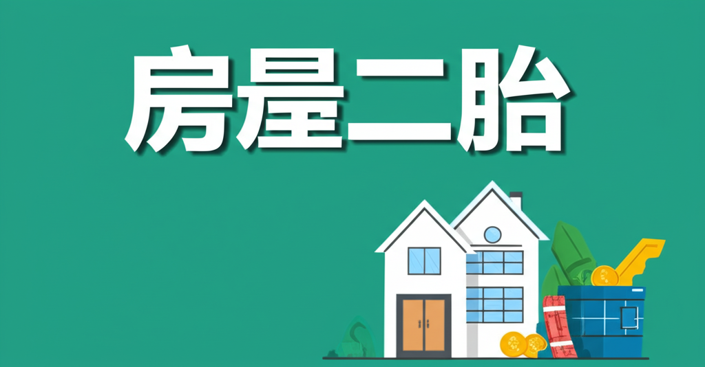

房屋二胎指的是將已有一筆房屋貸款的房屋，再次向銀行或金融機構申請第二筆貸款。
簡單來說：
你已經用房子抵押貸款了一次，現在想再用同一間房子抵押貸款第二次。
常見原因：
- 資金需求： 房屋二胎可以快速取得一筆資金，用於投資、創業、裝修、醫療、債務整合等。
- 信用條件不足： 若信用條件較差，較難申請到信用貸款或其他貸款，房屋二胎可能是一個更容易取得資金的選擇。
- 貸款彈性： 房屋二胎的貸款額度、利率、還款方式等，通常較具彈性，可以根據個人需求進行調整。
注意事項：
- 利率較高： 房屋二胎的利率通常會比一胎房貸高，因為銀行承擔的風險較大。
- 額度限制： 房屋二胎的貸款額度會受到房屋殘值、貸款成數、個人信用等因素影響。
- 費用較高： 房屋二胎可能需要支付評估費、代書費、設定費等相關費用。
- 還款壓力： 由於同時背負兩筆房貸，還款壓力會增加，需要仔細評估自身的還款能力。
- 風險較高： 若無法按時還款，房屋可能會被拍賣。
- 慎選貸款機構： 應選擇合法、信譽良好的銀行或金融機構，避免落入高利貸陷阱。
申請流程 (大致流程，各家銀行略有不同):
- 準備資料： 身分證、房屋所有權狀、一胎房貸合約、收入證明等。
- 提出申請： 向銀行或金融機構提出申請。
- 房屋估價： 銀行會對房屋進行估價，評估房屋的殘值。
- 審核： 銀行會審核申請人的信用狀況、還款能力等。
- 簽約： 審核通過後，與銀行簽訂貸款合約。
- 設定抵押權： 將房屋的抵押權設定給銀行。
- 撥款： 銀行將貸款金額撥款給申請人。
建議：
- 在申請房屋二胎前，應詳細評估自身的財務狀況、還款能力、資金用途等。
- 多方比較不同銀行或金融機構的方案，選擇最適合自己的方案。
- 諮詢專業人士的意見，例如貸款顧問、理財規劃師等。
總之，房屋二胎是一把雙面刃，可以快速取得資金，但也伴隨著較高的風險。在申請前，務必做好功課，仔細評估，才能做出明智的決策。